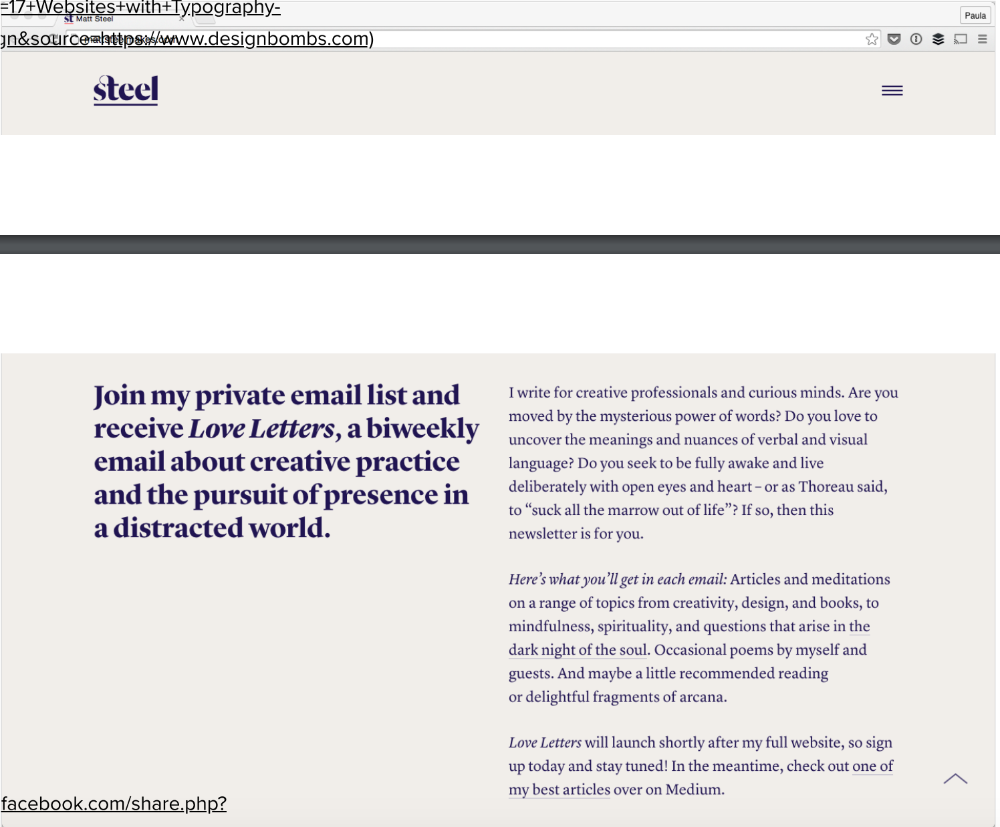

Challenges
In this lan, we are to challange ourselves even more and recreate a complicated website and post it on our html using the iframe coding.
Difficulties
I did have difficulties recreating this website as well but not as much as I did with lab 13 because I kind of had a different aproach to this lab since I was just all over the place with the previous lab. The difficulties include, creating columns, nav bars, changing the font of one word in a paragraph, and more. All of these things I had little experince because they were all new to me and the website that I chose had these features. I did get assistence from my parnter and online resources which helped a lot. For the font change, I had to add a span extension and I had to separate the steel header with the three lines on the right so that I was ableto customize them more freely.
Results
I would say that I tried my best to replicate it and make it as identical as possible for the chosen website. It was equally as dificult but what helped me was the different approach that I conducted. Overall, I would say I did a mediocre job and I definetly understood how to tackle these assignments.
